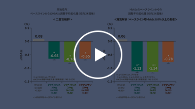
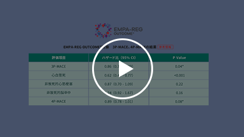
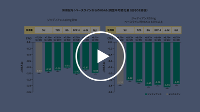

◯◯分◯◯秒
HbA1cが上昇するにつれ、心血管疾患や総死亡は増加することが分かっています
HbA1cと総死亡・心血管疾患による死亡との関連
NIPPON DATA90参加者のうち、15年間のフォローアップ期間中の総死亡および心血管死をHbA1cで層別化して解析したところ、HbA1cと心血管死の多変量調整ハザード比は正の相関を示し、HbA1cが1％増加するごとに心血管死のハザード比は1.32（95％CI：1.12-1.56）と有意に増加しました。

◯◯分◯◯秒
HbA1cを下げれば心血管疾患や総死亡を減らせるのでしょうか
ACCORD試験では、心血管イベント発生リスクを有する2型糖尿病患者において、厳格な血糖コントロールの大血管障害抑制効果は認められませんでした
ACCORD試験を含む５つの大規模RCTに参加した
33,040例のデータを用いてメタ解析した結果、
強化療法は通常治療に比して冠動脈疾患を抑制しましたが、
脳卒中や総死亡の抑制については有意差がありませんでした。(※)
※Ray KK et al.:Lancet.2009;373(9677):1765-72.

◯◯分◯◯秒
ベースラインですでに標準治療を受けていた患者にジャディアンスを投与したところ、
3P-MACEが14％減少
主要評価項目（3P-MACE）
ジャディアンスは心血管アウトカムに特化した試験において、心血管リスクを減少させた最初の血糖降下薬であることが確認されたのです。
ジャディアンスは標準治療へ上乗せした場合の有効性・安全性が検討されている
ジャディアンスは1日1回の経口投与により、
優れたHbA1c低下作用を示します
EMPA-REG OUTCOME®試験は標準治療にジャディアンスを上乗せした結果、心血管イベントリスクの有意な減少を認めましたが、こうした標準治療に用いられる種々の経口血糖降下薬との併用に関しても、ジャディアンスは国内第Ⅲ相併用療法長期投与試験で検討しています。
今回は、これまでの血糖介入試験を振り返りながら、EMPA-REG OUTCOME®試験の結果や、ジャディアンスが有する豊富なエビデンスの一部をご紹介しました。次回はFDAが出した新規糖尿病治療薬の心血管イベント発生リスク評価のガイダンスをご紹介しながら、EMPA-REG OUTCOME®試験を含むジャディアンスの豊富なエビデンスをご紹介します。是非ご期待ください。